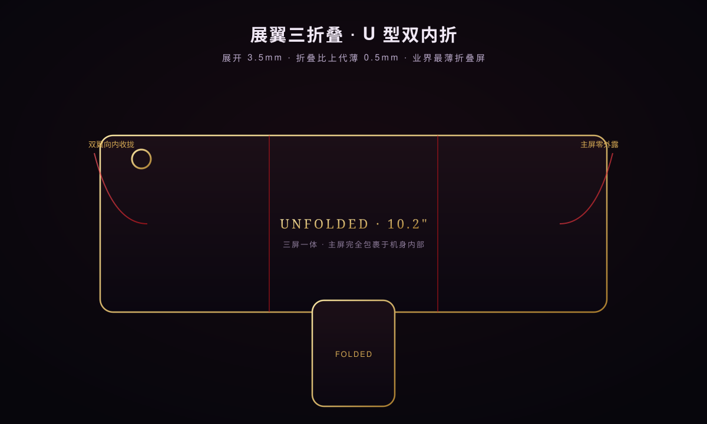
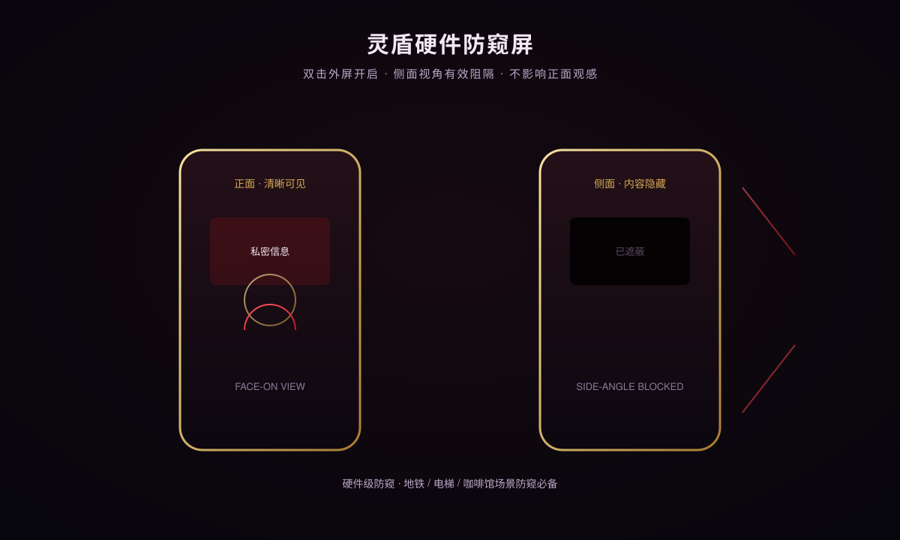
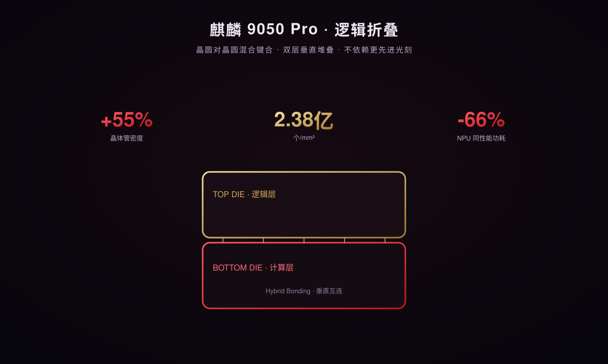
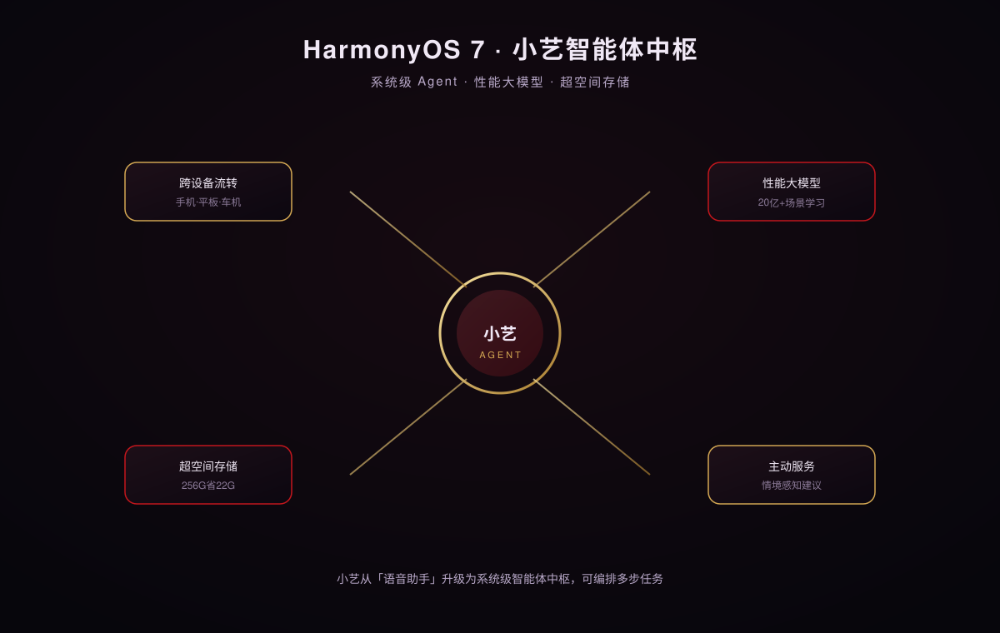
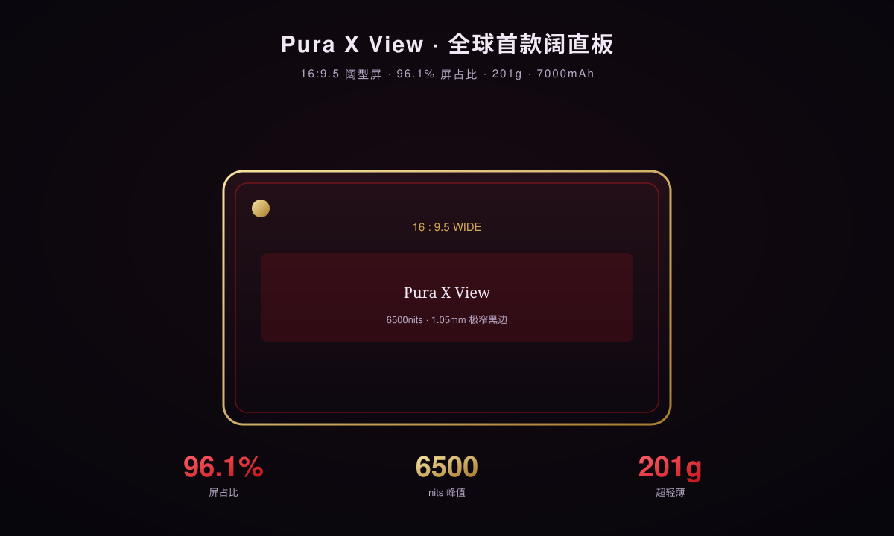

展翼三折叠：从 Z 型到 U 型双内折
Mate XT 2 摒弃前代 Z 型折叠，改用 U 型双内折「展翼」结构，左右双翼向内收拢，主屏完全包裹于机身内部——解决了一代机型的折痕与防护痛点。
U 型双内折：主屏零外露，防护结构性升级

前代 Mate XT 采用 Z 型折叠，外屏长期暴露、折痕明显。Mate XT 2 改为 U 型双内折，左右两翼向内对折，主屏在折叠态被完整包裹，既保护屏幕，也消除了侧边缝隙藏污纳垢的隐患。
机身首次增设独立外屏，折叠状态下即可完成扫码、回消息等高频操作，无需展开——这对三折叠的日常可用性是关键补强。
极致轻薄：展开 3.5mm，余承东称「业界最薄」
展开态厚度仅 3.5mm，折叠态比上一代薄 0.5mm。配合超可靠三折叠玄武架构，可应对高温喷淋等严苛测试。在「三折叠 + 大屏」的组合下，这个厚度是结构工程的显著进步。
灵盾硬件防窥屏：折叠屏隐私的硬件解法
Mate XT 2 首发硬件级灵盾防窥屏，双击外屏即可开启，从物理层面限制侧视角度——与三星 Galaxy S26 Ultra 的 Privacy Display 正面同赛道。
双击开启，侧面视角有效阻隔，正面观感不受影响

传统软件防窥依赖模糊或隐藏，体验割裂。华为的灵盾防窥屏是硬件级方案：通过屏幕光学结构限制侧方视角，正面观看清晰如常，旁人从侧面（地铁、电梯、咖啡馆）则看不到内容。
此前该技术已用于 MateBook Pro S，本次首次下放至手机端。可在输入 PIN / 图案 / 密码或通知弹窗出现时选择性开启，亦可指定单应用生效。
麒麟 9050 Pro：逻辑折叠，国产芯片的进阶信号
Mate XT 2 搭载全球首款采用「逻辑折叠」技术的麒麟 9050 Pro，通过晶圆对晶圆混合键合将单层平面重构为双层垂直堆叠，不依赖更先进光刻工艺即实现性能突破。
晶圆对晶圆混合键合：垂直堆叠，绕过光刻瓶颈

麒麟 9050 Pro 的核心创新是逻辑折叠（Logic Fold）：用晶圆对晶圆（Wafer-on-Wafer）混合键合将传统单层平面设计重构为双层垂直堆叠架构。在不依赖更先进光刻工艺的前提下，晶体管密度提升约 55%（达每平方毫米 2.38 亿个）。
9 月 4 日何庭波发布的「韬定律」第三篇论文，以麒麟 2026 实测数据显示：同等性能下 NPU / GPU / CPU 功耗分别下降 66% / 58% / 41%，正面回应了外界对 3D 堆叠发热的质疑，并带动半导体设备指数当日午间涨超 3%。
同性能功耗大降，3D 堆叠的散热质疑被数据推翻
论文给出的实测结论是：在提供相同算力时，NPU 功耗降 66%、GPU 降 58%、CPU 降 41%。这意味着麒麟 9050 Pro 在 AI 推理、图形与通用计算上都能以更低发热达成既往性能，直接利好三折叠这种散热受限形态。
HarmonyOS 7：小艺从语音助手升级为系统级智能体
HarmonyOS 7 标志鸿蒙迈入「Agent 时代」：方舟引擎融入基于 20 亿+ 场景学习数据训练的性能大模型，小艺成为可编排多步任务的系统级中枢。
小艺中枢：跨设备流转 + 主动服务 + 多步任务编排

小艺不再是单纯的语音唤醒工具，而是系统级智能体中枢：可理解意图、串联手机 / 平板 / 车机能力，并编排多步任务（如「规划行程并同步到车机」）。这与 Apple Intelligence、Galaxy AI 的 Agent 化方向一致，是 2026 年旗舰系统的共同主线。
性能大模型基于 20 亿+ 场景学习数据训练，可根据用户习惯智能调度系统资源，提升流畅度与续航。
超空间存储 + 方舟引擎：256GB 机型最多省 22GB
方舟存储引擎采用超空间存储技术，通过数据去重与压缩释放空间：从 HarmonyOS 6 升级后，256GB 机型最多可节省 22GB，512GB 省 51GB，1TB 省 109GB。系统今日已开启首批公测，覆盖手机、平板等数十款机型。
Pura X View：全球首款「阔直板」，16:9.5 宽屏新形态
与三折叠同场，华为还带来全球首款「阔直板」手机 Pura X View——16:9.5 阔型直屏，主打宽屏交互与超长续航，与 Mate XT 2 形成形态互补。
16:9.5 阔型屏 + 7000mAh：宽屏党的新选择

Pura X View 采用 16:9.5 阔型直屏，屏占比达 96.1%，极窄四等边黑边低至 1.05mm；屏幕拥有 6500nits 高峰值亮度、1,000,000:1 对比度，分辨率 2232×1320，支持 2160Hz 高频 PWM 调光。
整机仅 6.68mm 厚、201g 重，却内置 7000mAh 超大电池——在轻薄直板里是罕见的续航规格，明显瞄准「宽屏 + 长续航」的差异化人群。
全场景协同：WATCH 6 Pro 陶瓷白 + FreeBuds 7
发布会同步带来 HUAWEI WATCH 6 Pro 陶瓷白（首款全陶瓷手表，被称「高智小白瓷」，吴磊代言）与 FreeBuds 7 等穿戴音频新品，延续华为「全场景生态」打法。刘德华作为 Mate XT 2 非凡大师品牌大使亲临现场，强化超高端定位。
| 项目 | Mate XT 2 非凡大师 | Pura X View |
|---|---|---|
| 形态 | 展翼三折叠（U 型双内折） | 阔直板（16:9.5） |
| 展开厚度 | 3.5mm（业界最薄折叠） | 6.68mm |
| 重量 | — | 201g |
| 屏幕 | 三折叠大屏 | 6500nits / 96.1% 屏占比 |
| 电池 | — | 7000mAh |
| 芯片 | 麒麟 9050 Pro（逻辑折叠） | |
| 系统 | HarmonyOS 7（小艺智能体） | |
| 起售价 | 超 2 万元（史上最贵华为） | 待公布 |
三折叠形态领先，但价格锁定超高端
Mate XT 2 的 U 型双内折 + 外屏补位是实用进步，展开 3.5mm 领先行业；但「超 2 万元」起售价将其牢牢钉在超高端，走量不是目标，树立技术标杆才是。
灵盾防窥屏是 2026 旗舰隐私的硬件解法
与三星 S26 Ultra Privacy Display 同赛道，华为把「防窥」从软件提醒升级为物理不可见。对公共空间重度用户，这项功能的价值高于多数跑分。
麒麟 9050 Pro 逻辑折叠，国产芯片的进阶信号
用晶圆对晶圆混合键合实现垂直堆叠，绕过先进光刻瓶颈；韬定律论文以实测数据（同性能功耗降 41–66%）正面回应 3D 堆叠发热质疑。路线务实，真机散热待验证。
HarmonyOS 7 小艺智能体，Agent 时代开局
小艺升级为系统级中枢、可编排多步任务，超空间存储为小容量机型实打实释放空间。华为以「自研芯片 + 自研系统」组合，在折叠屏高端市场正面迎战苹果与小米。